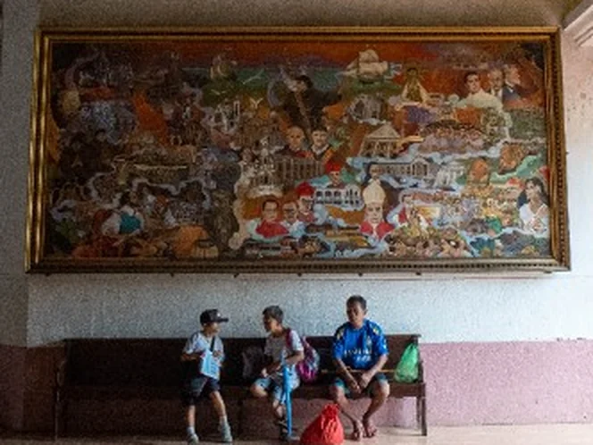
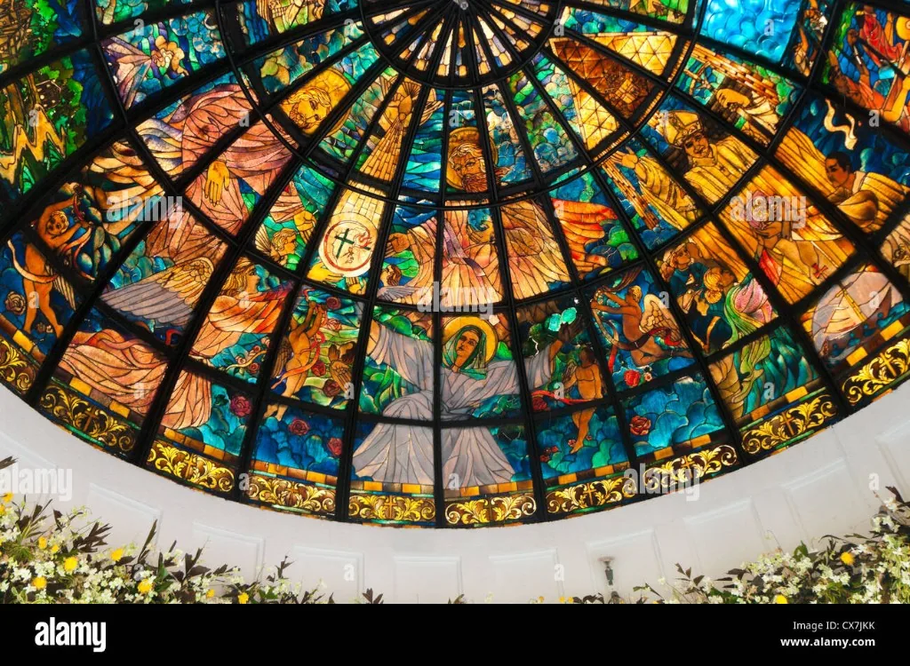
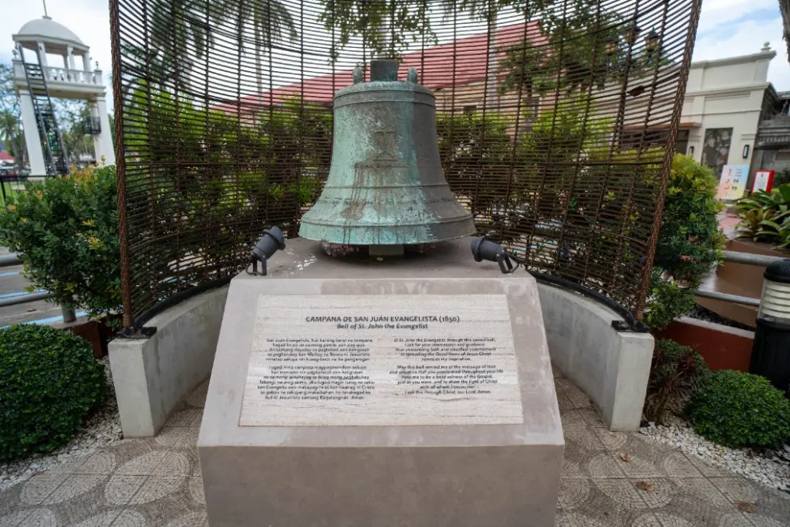
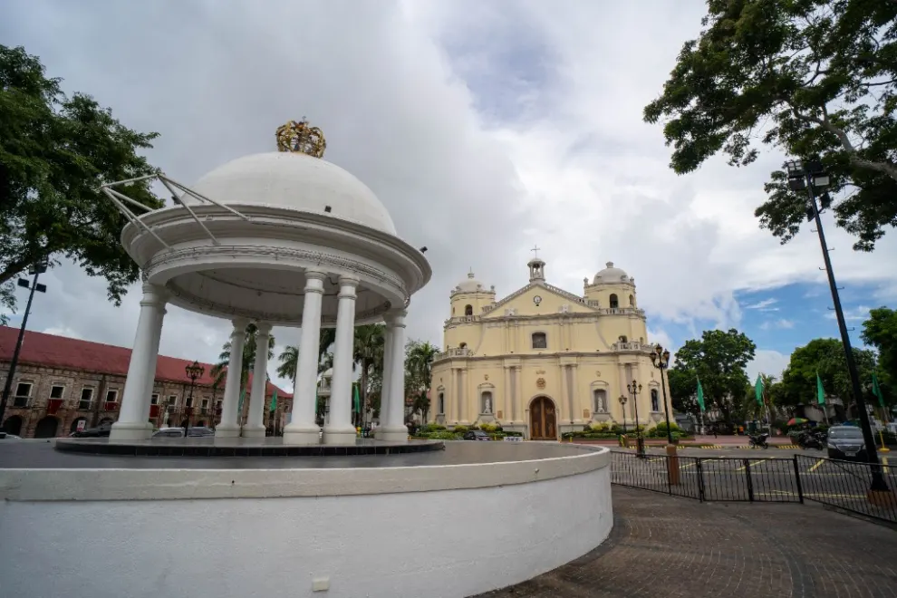
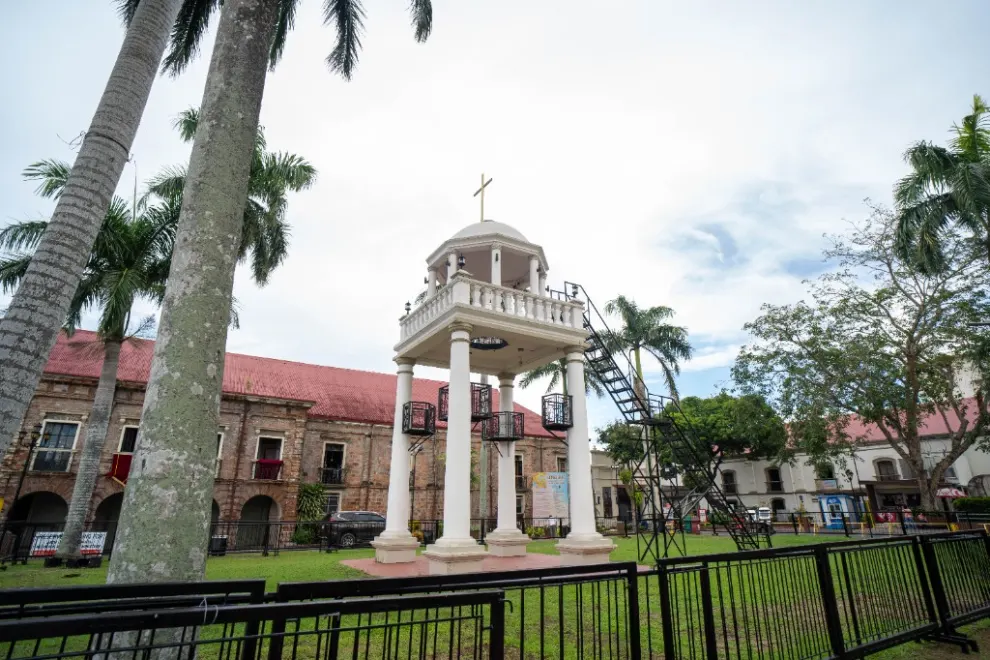
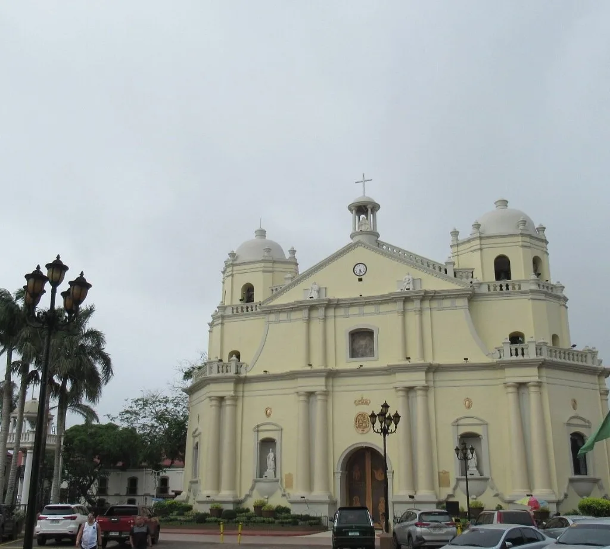

Place 1
The Cathedral Entrance
This Cathedral has stood at the heart of Bicol for more than four centuries. At this door are two patrons: Saint John the Evangelist and Saint Peter Baptist.
In the column

The present church was begun in 1808 and finished in 1843.
Beside

The diocese was founded in 1595. This is the mother church of the Archdiocese of Cáceres.
On the plate

It was restored and rededicated in 1988.
Pair


Strip


Two portraits


Medallion

Saint John the Evangelist and Saint Peter Baptist meet you at this door.
Even pair, full lines


Porta Mariae is a monument of love for Ina.
The present church was begun in 1808 and finished in 1843.